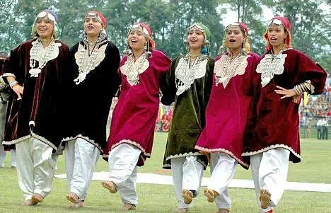

Exploring India's Culture and Heritage
Classical Dance Forms of India
Rouf is a traditional folk dance from the Kashmir Valley, performed primarily by women during festive occasions such as Eid and weddings. The dance features two rows of women facing each other, moving in graceful, synchronized steps while clapping rhythmically. Known for its elegance and poise, Rouf reflects the cultural beauty of Kashmiri traditions. The performers wear colorful traditional attire like pherans and headscarves, and the dance is usually accompanied by soulful Kashmiri music with instruments such as the rabab and santoor. Rouf not only serves as entertainment but also as an expression of joy and community bonding.
The dance is most commonly performed during festivals like Eid, as well as on wedding occasions and to celebrate the arrival of spring. It is a way to express joy, unity, and community spirit.
The dance is most commonly performed during festivals like Eid, as well as on wedding occasions and to celebrate the arrival of spring. It is a way to express joy, unity, and community spirit.
The dance is most commonly performed during festivals like Eid, as well as on wedding occasions and to celebrate the arrival of spring. It is a way to express joy, unity, and community spirit.